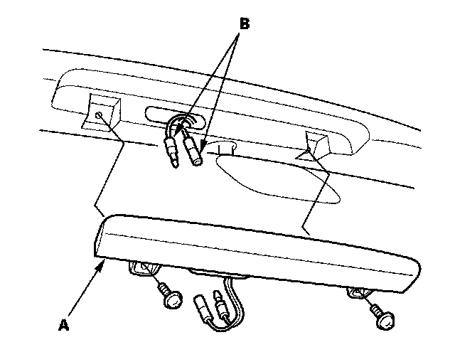

Operation CHARM
: Car repair manuals for everyone.
Home
>>
Honda
>>
2007
>>
Civic Si L4-2.0L
>>
Repair and Diagnosis
>>
Lighting and Horns
>>
Center Mounted Brake Lamp
>>
Service and Repair
Center Mounted Brake Lamp: Service and Repair
High Mount Brake Light Replacement
Si model

1.
Remove the two screws from the high mount brake light (A).
2.
Disconnect the terminals (B) and remove the high mount brake light.